6 Cılıbıtlar ve yakınları
Kocagöz
Burhinus oedicnemus, Eurasian Stone-curlew
Nispeten yaygın olarak az sayıda bulunan yaz konuğu ve geçit türüdür.
Bozkır benzeri alanlar, geleneksel tarım arazileri, kumullar ve nehir kıyılarında gözlenir. İç Anadolu, türün en önemli üreme bölgesidir. Ayrıca İç Ege, Marmara, Doğu Anadolu’nun nehir kenarları ve kıyısal deltaların kumullarını da üremek için kullanır. Güneydoğu Anadolu’da 2300 metre, Doğu Anadolu’da ise daha yüksek rakımlarda bulunabilir. Çoğunlukla nisan başında üreme alanlarına gelir.
Ağustos ve eylül aylarında daha çok sulakalanlarda küçük göç sürüleri kaydedilmiştir. Örneğin, 6 Eylül 1968’de Kulu Gölü’nde 75 birey gözlenmiştir. Geç sonbahar ve kış kayıtları ise nadirdir. 26 Kasım 1969’da eski Aynaz Bataklığı’nda bir birey, 6 Aralık 1984 ve 3 Ocak 2002’de Çukurova’da, 2 Ocak 2008’de Samandağ’da ve 28 Ocak’ta Göksu Deltası’nda kış kayıtları bulunmaktadır.
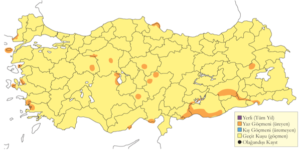
Üreme
Açık bozkırlar, tarım alanları, kumullardaki genellikle çıplak, sıklıkla taşlı veya kısa bitkili alanlarda ürer. Yuvası yere hafifçe kazılmış, genellikle az miktarda lif ve bitki döküntüleri kullanılmış ve küçük taş ve iri kum ile kenarları çevrelenmiş bir çukurdur. Türkiye’de gözlenen yumurta sayısı 2 (15 yuvada), 3 (11 yuvada). İÇA. Sultansazlığı’nda 9 Haziran 1982’de bir yuvada 4 yumurta görülmüştür ancak tür tayini hatalı olabilir (Kasparek, 1985). GDA. Daha erken ürer. 7 Mayıs 1970’de Ceylanpınar’da (Urfa) bir erişkin ve henüz uçamayan yavrusu ile 6 Mayıs 1996’da Cizre’de bir çift büyük yavrularıyla görülmüştür. İkisinde de yumurtlamanın yaklaşık 18 Mart’ta olduğu anlaşılmaktadır. AKD. Kayıtlar biraz daha erkendir ve en erken yumurta 25 Nisan’da kaydedilmiştir. Göksu Deltası’nda 5 Mayıs 2004’de bir yuvada bir yumurta görülmüş ve ikinci yumurta 7 Mayıs 2004’de koyulmuştur. Aynı alanda 9 Haziran 2006’da 2 haftalık 2 yavru görülmüştür. Bunların nisan sonunda yumurtladığı anlaşılmaktadır. Marmara’da 10 Mayıs, İç Anadolu’da 11 Mayıs, Ege’de 12 Mayıs ve Karadeniz’de 15 Mayıs ve 8-9 Haziran’da yumurta kaydedilmiştir. 30 Temmuz 1971’de Kızılırmak Deltası’nda oldukça büyümüş ancak henüz uçmaya başlamamış bir yavru görülmüştür (Dijksen & Kasparek, 1985) ve yumurtlamanın yaklaşık 11 Haziran’da olduğu anlaşılmaktadır (2. kuluçka da muhtemeldir). Başka yerlerde, çift üreme mevcuttur ancak Türkiye’den bununla ilgili veri yoktur.
Alttürler ve Sınıflandırma
Ayrıntılı bir çalışma bulunmamakla birlikte, nominat alttürün Türkiye’nin kuzeydoğusunda, saharae alttürünün ise diğer bölgelerde görüldüğü belirtilmiştir [@vaurie1963]. Bireysel varyasyonların yüksek olması, coğrafi varyasyonun tanınmasını zorlaştırmaktadır. Özellikle toprak yapısı ve bağıl nem koşulları sırt tonunda çeşitlilik yaratmaktadır. Bu koşullar altında, anakarada bulunan (Kanarya Adaları hariç) alttürlerin geçerliliği sorgulanabilir.
Uzunbacak
Himantopus himantopus, Black-winged Stilt
Yaygın olarak çok sayıda görülen bir yaz konuğudur.
Tüm ülkede, 1800 metre ve altındaki irtifalarda sığ göllerde, gölcüklerde, lagünlerde, nehir ağızlarında ve ıslak çayırlarda bulunur. Ancak temel yuvalama alanları 1990’lı yıllara kadar şu şekildeydi: Tuz Gölü çevresi (yaklaşık 500 çift), Akşehir Gölü (150 çift), Seyfe Gölü (500 çift), Sultansazlığı (200 çift), Ereğli Sazlıkları (100 çift), Gediz Deltası ve Marmara Gölü (tüm Ege’de toplam 100 çift), Burdur Gölü, Göksu Deltası ve Van Gölü çevresi. Kızılırmak Deltası (350 çift) ve Meriç Deltası’ndaki (300 çift) üreme kayıtları dışında, Marmara ve Karadeniz Bölgelerinde nispeten yerel ve nadir görülmektedir. Güneydoğu Anadolu’nun büyük kısmında muhtemelen ürememekte, ancak yakın dönemdeki bazı kayıtlar bu bölgede az sayıda alanda üreme potansiyeli olduğunu göstermektedir.
Göç sırasında daha yaygın görülür ve yüksek sayılarda kaydedilir. İlkbahar göçü Ege ve Akdeniz’de mart başında, İç Anadolu’da mart ortasında ve diğer bölgelerde mart sonu/nisan başında başlar. Bu göç, mayıs sonuna kadar devam eder. Üreme sonrası alanlardan ayrılan bireyler, temmuzun ikinci yarısında artan kayıtlarla kendini gösterir. Örneğin, 17 Temmuz 1986’da Kulu Gölü’nde 4000 birey, Çöl Gölü’nde 1000 birey kaydedilmiştir. Geçişin en yoğun olduğu dönem ağustostur; sonbahar ilerledikçe sayılar azalır. Gediz Deltası’nda 6 Ekim 2000’de 1073 birey, Van Gölü’nde 6 Ekim’de ve Erzurum Ovası’nda 25 Ekim 2002’de yüksek sayılar kaydedilmiştir. Kasım ayındaki kayıtlar genellikle kıyı bölgelerinden ve ara sıra kışladığı Ege, Akdeniz ve Karadeniz deltalarından gelmektedir.
Kış kayıtları genelde düşük sayılardadır, ancak arada sırada görülmektedir. Örneğin, 31 Ocak 1992’de Göksu Deltası’nda 4 birey, 22 Ocak 1993’te Çukurova’daki Tuzla Gölü’nde 2 birey, 27 Ocak 1996’da Acıgöl’de 2 birey ve aynı yerde 12 Ocak 2003’te 8 birey kaydedilmiştir. Ayrıca, 18 Aralık 2005’te Karakaya Barajı’nda 1 birey ve Gediz Deltası’nda 2002/2003’ten bu yana her yıl yaklaşık 5 bireyin kışladığı kaydedilmiştir.
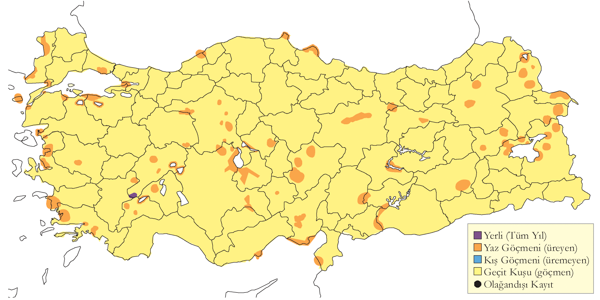
Üreme
Kıyılardaki ve iç kesimlerdeki göllerin ve bataklıkların açık alanlarında ürer. Çoğunlukla tipik olarak 10-50 çiftlik koloniler halinde yuva yapar ancak bazen sayı Seyfe Gölü’nde olduğu gibi 500’ü aşabilir (Magnin & Yarar, 1997). Alanda yalnız başına yaşayan bir çiftin de ürediği kaydedilmiştir. Göllerin kıyılarında ve üzerlerindeki adalarda, taşkın bataklıklarında ve çayırlarda tipik olarak ilkbaharda su altında olup mayısta kuruyan alanlarda yuva yapar. Yuvası sığ su üzerindeki bir ot öbeğinde daha da sığ sudaysa zeminden yükseltilmiş ya da su kenarlarındaki çamurların üzerindedir. Yuva derin olmayan bir çukur şeklindedir ve çok çeşitli materyallerden oluşur. Kuru alanlarda az miktarda dal kullanır, sulak yerlerde ise yuva ince bir yastık şeklindedir ve su yükseldiği takdirde materyal ilave eder. Türkiye’de gözlenen yumurta sayısı 4 (95 yuvada), 3? (5 yuvada). Daha düşük sayılar genelde yumurtlamanın ya da kuluçkn-aotonğbş kuluçka olduğu düşünülür. Yavru; tüm kuluçkada 4 veya daha fazla sayıda yumurtayla gerçekleşir. EGE. 23 Nisan 2003’de Milet’te kuluçkaya yatmamış ancak alan tutan erişkinler, nisanın son haftasında ilk yumurtalar görülmüş, 2 Mayıs 200’de ise kuluçkadaki bireyler kaydedilmiştir (P. Castell). 29 Mayıs 1999’da Bafa Gölü’nde içinde yumurta bulunan yuvalar ve birkaç yeni çıkmış yavru kaydedilmiştir. Bu durum ilk yumurtlamanın nisan sonunda veyamayıs başında başladığını göstermektedir. 1 Temmuz 1996’da Marmara Gölü’nde yanında 3 küçük yavruyla bir erişkin ve içinde 4 yumurta olan bir yuva kaydedilmiştir. AKD. Çukurova’da bazıları nisan sonunda kur yapmakta olan 200-250 çift (Have et al., 1988) ve 8-9 Mayıs 1964’de yanlarında küçük yavrularla birkaç çift görülmüştür (Warncke, 1964--65). Bu tarihler yumurtlamanın 12 Nisan civarında olduğunu göstermektedir. Göksu Deltası’nda 21 Mayıs 1993 ve 15 Haziran 1992’de kuluçkada birkaç erişkin, 17 Haziran 1992’de yaklaşık 2 haftalık bir yavru görülmüştür. Bu durumdan yumurtlamanın mayıs başında olduğu anlaşılmaktadır. Göksu Deltası’ndaki kumullarda 19 Mayıs 1999’da 50’den fazla erişkinin kuluçkada olduğu kaydedilmiştir. 18 Temmuz 1972’de Karamık Gölü’nde ve 27 Haziran 1992’de Acıgöl’de uçmaya başlamamış yavrular kaydedilmiştir (Dijksen & Kasparek, 1988). İÇA. 27 Nisan 2004’de Bolluk Gölü’ndeki bir adada henüz yuva yapmamış erişkinler görülmüştür. 7 Mayıs 1993’de ise aynı yerde tamamında kuluçka olan çok sayıda yuva görülmüştür. 5 Haziran 1992’de Eşmekaya yakınlarında yumurtadan yeni çıkmış yavrular barındıran bir yuva görülmüştür; bu durumda yumurtlamanın mayıs başında olduğu söylenebilir. Sultansazlığı’nda 21 Mayıs 1979’da yeni kurulmuş bir yuva görülmüştür (Kasparek, 1985) ki bu yumurtlamanın 23 Nisan dolaylarında gerçekleştiğini işaret etmektedir. Kulu Gölü’nde 22 Mayıs 1992’de içinde yumurta olan yaklaşık 50 yuva bulunmaktaydı. Aynı yerde 6 Haziran 1996’da yavrularıyla birlikte birkaç çift, 13-15 Temmuz 1971’deyse içinde halen yumurta bulunan yuvalar görülmüştür (Kasparek, 1987). Bu son bireyler muhtemelen daha erken yuva yapıp başarısız olanların yerine gelen kuşlardır. Seyfe Gölü’nde 18-22 Haziran 1992’de, bazılarının yanında yavru olan yaklaşık 500 çift ve 14 Haziran 1993’de de içinde yumurta olan çok sayıda yumurta görülmüştür. İç Anadolu’daki diğer alanlarda haziran-temmuz döneminde birkaç yavru kaydı daha vardır. MAR. Haziran 1966’da Manyas Gölü’nde kuluçkada erişkinler ve 1 Temmuz 1966’da içinde yumurta olan bir yuva görülmüştür. 10 Haziran 1998’de Uluabat Gölü’nde çiftleşen bireyler gözlenmiştir (Welch & Welch, 1998b). KAR. Kızılırmak Deltası’nda 1992’de 250-300 üreyen çift vardı. Bunlar mart ortasında gelmiş, nisanda sayılarını arttırarak 24 Nisan 1992’de alan tutma davranışına girmiş, en azından bazıları 30 Nisan’da çiftleşmiş ve 10 Mayıs’ta içinde yumurta olan ilk yuvalar kayda geçmiştir; ancak çalışmanın sona erdiğini tarih olan 10 Haziran’da halen herhangi bir yavru birey görülmemişti (Hustings & Dijk, 1994). DOA. Haziran 2001’de Sodalı Göl’de yumurtlama başlamış ve içinde 1-2 yumurta olan birkaç yuva görülmüştür. 2 Ağustos 1992’de Yoncalı ve 21 Temmuz 1992’de Bendimahi’de yavru rapor edilmiştir. ancak Doğu Anadolu’dan fazla veri yoktur ve muhtemelen üreme kayıtları da tahmin edilenden daha önce başlamaktadır. Türkiye’de üreme sezonu belirgin olarak uzun bir dönemi kapsar ve geç kayıtlar büyük ihtimalle boşalmış yuvaları kullanan çiftlere aittir.
Alttürler ve Sınıflandırma
Türkiye’de nominat alttürü bulunur.
Kılıçgaga
Recurvirostra avosetta, Pied Avocet
Nispeten yaygın olarak ve çok sayıda bulunan yerli ve kış konuğudur.
Ana üreme alanları Tuz Gölü çevresi, Seyfe ve Kulu Gölleri, Sultansazlığı, Gediz Deltası, Acıgöl ve Göksu Deltası’dır. Gediz Deltası’nda 55 çift ürer [@magninyarar1997] ve genellikle tuzladaki adalarda yuva yapmaktadırlar [@eken1997a]. İç Anadolu’daki diğer üreme alanları Sultansazlığı (150 çift), Ereğli Sazlığı (75 çift), Çöl Gölü, Tersakan Gölü ve Tuz Gölü’dür [@magninyarar1997]. Doğuda 1800 metreye kadar kaydedilmiştir.
Göç sırasında daha yaygındır ve tüm bölgelerde görülmekle birlikte, Türkiye’nin batı yarısında daha yoğundur. İlkbahar göçü mart ortasında başlar ve mayıs sonuna kadar devam eder. Temmuzun ilk yarısında lokal olarak üreyenlerin sayısı, göçmenlerle birlikte artar. Örneğin, Tuz Gölü’nde 12 Ağustos 1969’da 3000’den fazla, Acıgöl’de 1968’in eylül ortasında en az 2000, Erçek Gölü’nde eylül ayında 1500-2000 ve Gediz Deltası’nda ekim ayında 6000’den fazla birey kaydedilmiştir. Kuşlar, üreme alanlarından en geç kasım sonunda ayrılmaktadır.
Türkiye’nin iklimin daha ılıman olduğu batı kesimlerinde önemli sayılarda kışlar. Örneğin, 5 Ocak 1969’da Acıgöl’de 650 ve 18 Ocak 2003’te 142 birey, 1968/69 kışında Tuz Gölü’nde yaklaşık 100 birey, 20 Ocak 1974’te Bafa Gölü’nde 160 birey ve 28 Şubat 1974’te Büyük Menderes Deltası’nda 125 birey kaydedilmiştir.
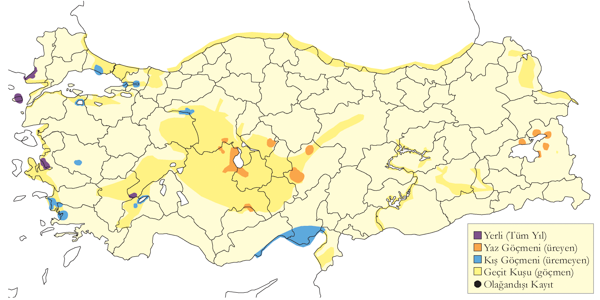
Üreme
Açık, tuzlu ve acı göllerde, tuzlalarda, sıklıkla alçak adalarda ve küçük kum tepelerinde ve ayrıca kuru bataklıklar, seyrek çayırlar ve çamurlu alanlarda ürer. Esasen kolonici ürer fakat tek çiftler de görülür. Koloniler bazen sadece birkaç çift, bazense 1992’de Seyfe Gölü’nde olduğu gibi 750 çiftten daha kalabalık olabilir. Koloniler genelde adalardadır ancak kıyılarda da olabilir. Yuvalar çoğunlukla göllerin kıyılarında iyi yerleşmiştir ancak küçük adalarda yer sınırlı olduğundan daha birbirine yakın olabilirler (2-3 m aralıkla). Daha büyük adalarda yuvaları sıklıkla kenardadır ve uzunbacaklarla beraberdir. Daha güçlü bir kolonici olan ince gagalı martı (I) ve gülen sumru gibi türler ise adanın merkezinde yuva yapar. Yuva çıplak zeminde derin olmayan bir oyuktur ve çevrelenmemiştir veya az miktarda bitkisel materyal bulunur. Türkiye’de gözlenen yumurta sayısı neredeyse her zaman 4, nadiren 3 ve bir kayıtta 5. Üreme mevsimi uzundur ve üremede başarısız olanların yuvaları başka çiftlerce doldurulur. İÇA. Bolluk Gölü’nde 23 Nisan 2006’da 12 yuva kaydedilmiş ve bunları 11’i kuluçkayı tamamlayamamış, 1-3 yumurta ve 4 yumurta olanlardan sadece biri kuluçkayı tamamlamıştır. 14-15 Mayıs 2004’de aynı adada 50-100 yuva sayılmıştır ve bunların neredeyse tamamı 4 yumurtalıdır. Bir yuva 3, bir yuva olağandışı olarak 5 yumurta ve bir tanesinde de yumurtadan yeni çıkmış yavru görülmüştür. Buna göre ilk yumurtlama tarihinin 18 Nisan olduğu söylenebilir. Aynı yerde 7 Mayıs 1993’de çoğu yuva 4 yumurtalıdır ve 23/24 Haziran 1992’de çeşitli büyüklüklerde yavrular görülmüş ancak 14 yuvada da yumurta görülmüştür. Kulu Gölü’nde 6 Mayıs 1972’de bir adada 156 yuva ve diğer bir adada da daha fazlası bulunmaktaydı. 6 Mayıs 1974’de içinde yumurta olan 36 yuva ve 20 Mayıs 1974’de yanlarında 10 günlüğün üzerinde yavruları olan birkaç çift kaydedilmiş, en erken yumurtlama tarihinin 14 Nisan olduğu anlaşılmaktadır. Kulu Gölü’nde 5 Haziran 1975’de 105 üreyen çift kaydedilmiştir ve bunların altısında yavru bulunmaktaydı. 14-15 Temmuz 1971’de hem küçük hem de çok büyük yavrular bir arada görülmüştür (Kasparek, 1987). Haziran ortasındaki en geç yumurtlamayı ifade etmektedir. Aynı gölde 22 Mayıs 1992’de yaklaşık 100 yuva kaydedilmiş, ancak yavru görülmemiş ve 19 Haziran 1992’de ise hala birkaç yuvada yumurta bulunmaktaydı. 12 Haziran 1998’de en azından bir çiftin 5 yetişkin yavrusu varken birkaç yuva da halen yumurtalar gözlenmiştir. Seyfe Gölü’nde 22 Mayıs 1983’de yavrulu 16 çift görülmüş, bu tarih en erken yumurtlamanın 24 Nisan’dan sonra olamayacağını göstermektedir. 2 Haziran 1971’de aynı yerde 300 üreyen çiftin henüz yavruları vardı ancak 75 yuvada da halen yumurta bulunmaktaydı (Husband & Kasparek, 1984). 28 Mayıs 1993’de çoğu yuvada yumurta, bazılarında ise küçük yavrular vardı ve 14 Haziran 1993’de çoğu yuvada hala yumurta bulunmaktaydı. AKD. 16 Mayıs 1951’de Göksu Deltası’nda henüz bir haftalık olmamış bir yavru bulmuştur ve bu durum yumurtlamanın nisan ortasında olduğu anlamına gelmektedir (Hollom, 1955). Aynı alanda 6 Mayıs 1973’de her birinde 4 yumurta olan 4 yuva bulunmuştur (Witt 1976). 23 Mayıs 1971’de Çukurova’da her birinde 4’er yumurta olan 2 yuva kaydedilmiştir (Hustings & Dijk, 1994). DOA. Van Bataklılarında, 10 Haziran 2001’de pek çok erişkinin alarm sesi ve 6/7 Temmuz 1974’de genç bireyler görülmüştür.
Alttürler ve Sınıflandırma
Monotipik bir türdür.
Poyrazkuşu
Haematopus ostralegus, Eurasian Oystercatcher
Lokal olarak az sayıda yuvalayan yerli ve kış göçmenidir.
Düzenli olarak kullandığı önemli üreme alanları arasında Meriç, Büyük Menderes ve Gediz Deltaları yer almaktadır. Gediz Deltası’nda 1995 yılında 27 çiftin, 1996’da ise 25 çiftin ürediği tespit edilmiştir [@eken1997a]. Başta Kızılırmak ve Fırat’ın nispeten bozulmamış kısımları olmak üzere, nadiren de olsa İç ve Doğu Anadolu’daki göllerde düşük sayılarda kuluçkaya yatar. Doğu Anadolu’da 2100 metreye kadar yuvaladığı bilinen bir türdür.
Göç döneminde daha sık rastlanır. Özellikle kıyısal alanlarda yaygın olarak bulunsa da sayıları genellikle düşüktür. Temmuz ayında gözlenen küçük aile grupları dışında, genellikle tek başına kaydedilir. Göç döneminde daha çok mart-mayıs ve temmuz-ekim ayları arasında gözlenir. Kış aylarında tüm ülkedeki kıyısal sulakalanlarda düşük sayılarda bulunur. 1999 Kış Ortası Su Kuşu Sayımı’nda toplam 73 birey kaydedilmiştir. Bu alanların çoğu, türün yıl boyunca kaydedildiği üreme alanlarıdır.
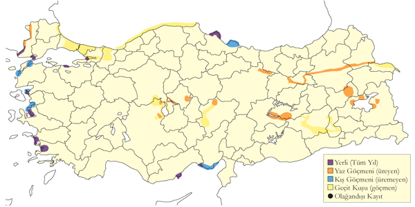
Üreme
Nehir kıyılarındaki açık alanlar, özellikle Doğu Anadolu’da çakıl adaları, iç göllerdeki alçak adalar ve bitkisiz kıyılar, kumsallar, kumullar, çakıl dilleri, lagünler ve kıyıdan uzak adacıklarda ürer. Yerde kurduğu yuvası sınırları belirsiz ufak bitki yığınlarından veya taşların kullanıldığı sığ bir çukurdan ibarettir. Yumurta sayısı 3 (5 yuvada). 7 Mayıs 1993 ve 14 Mayıs 2007’de içinde tek yumurta bulunan ve kuluçka sürecinin tamamlanmadığı düşünülen yuvalar kaydedilmiştir. Yavru sayısı 1 (2 yuvada), 2 (4 yuvada). AKD. Göksu Deltası’nda 30 Nisan 1970’de kur davranışı ve 27 Mayıs 1973’de denizden 50 ve 100 m uzaklıkta içinde üçer yumurta olan 2 yuva görülmüştür (Witt, 1976). DOA. 29 Mayıs 1969’da Erçek Gölü’nde bir yuva görülmüştür (Kasparek & Ven, 1983). 17 Mayıs 1970’de Selim yakınlarında bir yavruyla ebeveynleri görülmüştür ki bu durum yumurtlamanın 20 Nisan’dan sonra gerçekleştiğini göstermektedir. 27 Mayıs 1994’te Murat Nehri’nde bir çiftle ve 2 yavrusu ve 19 Haziran 1984’te aynı yerde başka bir çiftle ve 2 yavrusu kaydedilmiştir. 25 Haziran 2004’te Ağrı yakınlarındaki bir nehirdeki çakıl adasında 3-4 haftalık yavrularıyla bir çift görülmüştür. Bu durum yumurtlamanın mayıs başında olduğunu göstermektedir. AKD. Kızılırmak Deltası’nda üreyen çiftler yalnızca nehrin kıyılarında bulunur. Burada 31 Mayıs 1992’de küçük yavrularıyla birlikte erişkinler ve 18 Temmuz 1992’de 2 yavru görülmüştür (Hustings & Dijk, 1994). İÇA. 22 Mayıs 1992’de Kulu Gölü’ndeki bir adada kuluçkada bir erişkin ve 7 Mayıs 1993’de Bolluk Gölü’nde kuluçkası tamamlanmamış bir yumurta ve 15 Mayıs 2004’de 3 yumurta görülmüştür. Kulu Gölü’nde 31 Mayıs 1972’de içinde 3 yumurta olan bir yuva ve 14-15 Temmuz 1971’de en az 2 tüylenmiş yavru kaydedilmiştir (Kasparek, 1987). EGE. 17 Mayıs 1899’da (Selous, 1900), İzmir yakınlarındaki bir lagünde içinde 3 yumurta olan bir yuva ve 23 Mayıs 1950’de Aliağa yakınlarındaki kıyıdan uzak bir adada “histerik alarm” veren bir çift görülmüş ve büyük ihtimalle yavrunun mevcut olduğu kaleme alınmıştır (McNeile, 1950, 1951, 1954, 1967, 1968, 1970, 1972, 1973). Karina Dalyanı’nda (Büyük Menderes Deltası) 14 Mayıs 2007’de içinde çatlamamış yumurta olan bir yuva görülmüştür.
Alttürler ve Sınıflandırma
Del Hoyo vd. (1996) Nominat alttürün bulunduğunu belirtir, longipes’i de hesaba katar (Roselaar, 1995). Türkiye’den herhangi bir örnek olmamasına rağmen, longipes’i mevcut bir alttür olarak kabul ediyoruz.
Gümüş Yağmurcun
Pluvialis squatarola, Grey Plover
Nispeten yaygın olarak çok sayıda bulunan geçit türü ve kış konuğudur.
Kış aylarında genellikle kıyı alanlarında, ülkenin batı ve orta kesimlerinde nispeten boldur. İç Anadolu ve Ege’nin iç kesimlerinde tek tük kaydedilir. En yüksek sayılar, batıdaki kıyısal sulakalanlarda görülür. Gediz Deltası, Büyük ve Küçük Menderes Deltaları ile Bafa Gölü, Türkiye’de kışlayan popülasyonun %50’sini barındırır. Gediz Deltası’nda yapılan son araştırmalarda, 12 Ocak 2003’te gözlenen 374 birey, Türkiye’de bugüne kadar kaydedilen en yüksek sayı olmuştur. Güneyde Akyatan Gölü, Yumurtalık Lagünleri ve Göksu Deltası tür için önemli sulakalanlardır.
Güney ve batı kıyılarındaki ilkbahar göçü mart ayında başlar, nisan ortasında zirveye ulaşır ve mayıs sonuna kadar devam eder. Sonbahar göçü ise temmuz sonundan kasım sonuna kadar gerçekleşir. İlkbahar göçüne kıyasla, sonbahar geçişi kıyı alanlarına daha bağlıdır ancak daha yüksek sayılar kaydedilir; örneğin, Saros Körfezi’nde 200-300 birey gözlenmiştir. [@kasparek1996] yalnızca bir yaz kaydından bahsetmektedir.
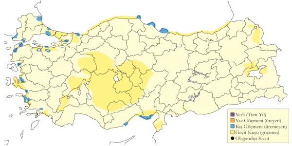
Üreme
Türkiye’de yuvalamaz.
Alttürler ve Sınıflandırma
Monotipik bir türdür.
Altın Yağmurcun
Pluvialis apricaria, European Golden Plover
Lokal olarak az sayıda bulunan kış konuğudur.
Türkiye’deki başlıca kışlama alanları, kuzey, batı ve güney kıyılarındaki sulakalanlardır. Kasım ayında sürüler oluşturarak bir araya gelir ve şubat ayında dağılmaya başlarlar. En büyük sürülerden biri 18 Aralık 2001’de Büyükçekmece’de 1000 birey, bir diğeri ise 14 Ocak 1996’da Kızılırmak Deltası’nda 1389 birey olarak kaydedilmiştir. Kuzey ve kuzeydoğudaki alçak çayırlar gibi türe uygun ancak yeterince gözlenmeyen alanlar göz önüne alındığında, türün gerçek sayısının kaydedilenden daha fazla olduğu düşünülmektedir. İç ve Doğu Anadolu’dan da kış kayıtları bulunmaktadır; 3-5 Aralık 1969’da Van Gölü’nde gözlenmiştir.
İlkbahar geçişi mart başından mayıs başına kadar sürer. En yüksek sayılar, martın ilk yarısında İç Anadolu’daki sulakalanlarda görülür ve mayıs ayında tür genellikle kaydedilmez. 11 Mayıs’ta hem Meriç Deltası’nda hem de Aliağa’da gözlenen bireyler, ilkbahardaki en geç kayıtlardır. Yaz döneminde, 16 Haziran’da Mogan Gölü’nde gözlenen tek birey ve 21 Haziran’da Çavuşçu Gölü’nde kaydedilen 50 birey, olağan dışı yaz kayıtlarıdır. Sonbahar geçişi ise ağustos sonunda başlar, ekim ayında zirve yapar ve kasım sonuna kadar devam eder.
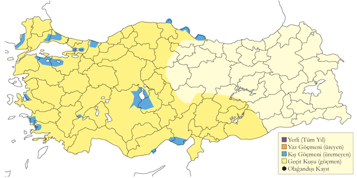
Üreme
Türkiye’de yuvalamaz.
Alttürler ve Sınıflandırma
Monotipik bir türdür.
Amerika Altın Yağmurcunu
Pluvialis dominica, American Golden Plover
Rastlantısal konuktur.
15 Mayıs 1993’te Göksu Deltası’ndaki Akgöl’ün kuzeybatı kıyısında ilk yazında olan ya da dişi bir birey ayrıntılı şekilde belgelenmiş ve bu, Türkiye’deki tek şüpheli olmayan kayıt olarak kabul edilmiştir [@kirwan1994c]. Bir birey, Kızılırmak Deltası’nde (Samsun), 8 Mart 2021 tarihinde E. Yoğurtçuoğlu tarafından kaydedilmiştir. Olası diğer kayıtlar için küçük altın yağmurcuna bakınız. Ortadoğu’dan bilinen tek diğer kayıt, 23 Kasım-26 Aralık 2003 tarihlerinde Umman’daki Sur’da yapılmıştır [@grieve2005].
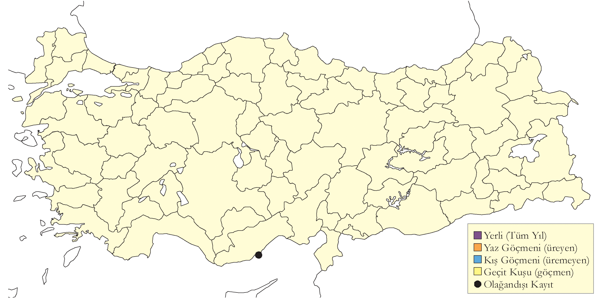
Üreme
Türkiye’de yuvalamaz.
Alttürler ve Sınıflandırma
Monotipik bir türdür. Daha önce küçük altın yağmurcun ile aynı tür olduğu düşünülmekteydi.
Küçük Altın Yağmurcun
Pluvialis fulva, Pacific Golden Plover
Rastlantısal konuktur.
Büyükçekmece (İstanbul) çevresinde E. Thieme ve H. Schramm tarafından gözlenen bir birey, Alman Nadir Tür Komitesi tarafından resmi olarak kabul edilmiştir [@kasparek1990a; @kasparek1992a]. İkinci kayıt, 1 Ekim 2009’da Kızılırmak Deltası’nda görülen bir bireydir (Sandgrouse 32:186). Bu alanda daha sonra 2009 ile 2024 yılları arasında her yıl maksimum 2 birey görülmüştür.
Kızılırmak Deltası dışında, Tuzla Gölü’nde 20 Mayıs 2011’de bir birey (E. Yogurtcuoglu), Kuyucuk Gölü’nde 8 Ekim 2011’de bir birey ve Enez Lagünleri’nde 13-21 Eylül 2014’te bir birey, Trabzon’da 4 Aralık 2016’da bir birey (B. Hatinoğlu, M. Saltik), Tokat Kaz Gölü’nde 26 Ağustos 2021’de bir birey (M. K. Sondaş), Çanakkale Kavak Deltası’nda 11 Eylül 2021’de bir birey (C. Polat), Göksu Deltası’nda 10 Şubat 2023’te üç birey (M. A. Yener, Y. Yener) ve İstanbul Balaban Köyü’nde 5 Kasım 2023’te bir birey (M. Erarslan, K. Ergün, E. Kuruca, S. Sabirli) gözlenmiştir.
Küçük/Amerika altın yağmurcununa ait iki kayıt bulunmaktadır ve bu kayıtlar gerekli arazi kriterlerinin yaygın şekilde anlaşılmasından öncesine aittir [@kirwan1994c]. İlk kayıt, 30 Mart 1981’de Adana Karataş’ta altın yağmurcunlarla birlikte gözlenen üç bireyden oluşurken [@parr1981; @goriup1983], ikinci kayıt, 6 Mayıs 1990’da Göksu Deltası’nda yaz tüyörtüsüyle bir erişkin bireyin kaydedilmesidir [@kirwan1994c].
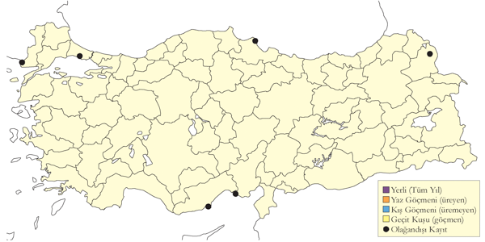
Üreme
Türkiye’de yuvalamaz.
Alttürler ve Sınıflandırma
Monotipik bir türdür. Eskiden Amerika altın yağmurcunu ile tek tür olarak değerlendirilmiştir.
Dağ Cılıbıtı
Eudromias morinellus, Eurasian Dotterel
Nispeten lokal olarak az sayıda görülen geçit türüdür.
Genellikle her iki mevsimde de nadir bir göçmen olarak görülür. 1970’lerin başında Tuz Gölü civarında sonbahar sonlarında düzenli ve olağandışı sayılarda, ilkbaharda ise daha az sayıda kaydedilmiştir. İç Anadolu’da zaman zaman 800 bireye kadar büyük gruplar gözlenmiştir. İstanbul Riva’da az sayıda düzenli geçiş yaptığı bilinmektedir. Türün görünüşe göre ülkenin batı ve orta kesimlerinde düzenli olduğu anlaşılmaktadır.
İlkbahar göçü mart sonu ile mayıs başı arasında, sonbahar göçü ise eylül başı ile kasım sonu arasında gerçekleşir. Türün zaman zaman kışladığını düşündüren iki kış kaydı da bulunmaktadır.
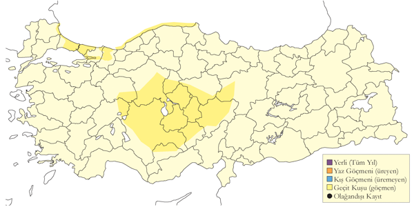
Üreme
Türkiye’de yuvalamaz. Avrupa ve Asya’nın kuzey bölgelerinde yuvalar.
Alttürler ve Sınıflandırma
Monotipik bir türdür. Zaman zaman Charadrius cinsi altında değerlendirilir.
Halkalı Cılıbıt
Charadrius hiaticula, Common Ringed Plover
Yaygın olarak az sayıda bulunan geçit türü ve kış konuğudur.
Ana göç dönemleri nisan sonu-mayıs sonu ile ağustos sonu-kasım başıdır. İlkbahar göçü mart ortasından mayıs sonuna kadar sürerken, sonbaharda kasım sonu, hatta aralık ortasına kadar geç kalan bireyler iç kesimlerde kaydedilebilir. En kalabalık sürüler göç sırasında görülür. Kızılırmak Deltası’nda 17 Ekim 1992’de kaydedilen 200 birey, Türkiye’deki en büyük sürü kaydıdır. Çukurova’daki sulakalanlar ve Meriç Deltası da önemli göç durakları arasındadır.
Tür, kıyı alanlarında lokal ancak seyrek olmayan bir kış konuğudur. Başlıca kışlama alanları Akdeniz kıyısındadır ve Çukurova’daki lagünler popülasyonun çoğunu barındırır. Kış dönemine ait bilinen en büyük topluluklar, 29 Ocak 1992’de Akyatan Gölü’nde kaydedilen 180 birey (IWC 1992) ile 29 Aralık 2007’de Güllük Deltası’nda görülen 150 bireylik sürüdür. Önemli kışlama alanları arasında Gediz, Büyük ve Küçük Menderes deltaları, Göksu Deltası, Büyükçekmece Gölü, Hersek Lagünü (Yalova), Yeşilırmak ve Kızılırmak deltaları yer alır. İç bölgelerde kışlama kaydı nadirdir; Çeltikçi Akgöl, Hirfanlı ve Sarıyar Barajları ile Birecik-Halfeti arası, kışın görülebildiği alanlar arasındadır.
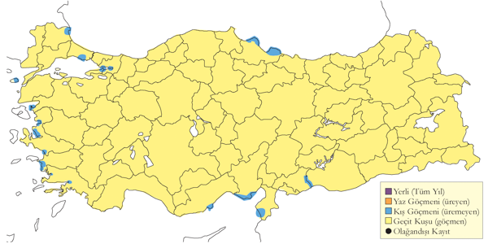
Üreme
Türkiye’de yuvalamaz. Avrasya’nın kuzey bölgelerinde başta tundra kuşağında yuvalar.
Alttürler ve Sınıflandırma
Görünüşe göre bireylerin çoğu tundrae alttürünün karakteristik özelliklerini taşımaktadır [@have_etal1988]. Ekim 1945’te Mogan Gölü’nden alınan bir örnek [@wadley1951notes], bu alttürün Türkiye’de varlığını kanıtlamaktadır. Ancak G. M. Kirwan, bu örneği İngiltere’deki Tring Doğa Tarihi Müzesi’nde bulamamıştır.
Halkalı Küçük Cılıbıt
Thinornis dubius, Little Ringed Plover
Yaygın olarak çok sayıda görülen bir yaz konuğudur.
En yaygın olarak üreyen kıyı kuşudur. Karadeniz ve Doğu Anadolu’nun dağlık kesimlerinde lokal olarak bulunur. Karadeniz kıyısındaki plajlarda, çakıllı akarsu kıyıları ve adalarında, çakıl ocaklarında ürer.
İlkbahar göçü mart başından mayıs sonlarına kadar devam eder ve nisan sonunda zirve yapar; en erken varışlar 5 Mart’ta Karamık’ta ve 10 Mart’ta Uluabat Gölü’nde gözlenmiştir. Sonbahar göçü temmuz ortasından ekim sonuna kadar sürer ve ağustos ortasında zirve yapar. İstisnai olarak 1 Eylül 2002’de Kulu Gölü’nde 300 birey kaydedilmiştir. Akdeniz, Ege ve Karadeniz Bölgesi’ndeki sulakalanlarda az sayıda kışlar, örneğin 20 Şubat 2002’de Gediz Deltası’nda 10 birey gözlenmiştir.
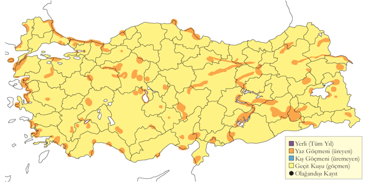
Üreme
Yuvalama alanı: Nehir yataklarında, kıyı düzlüklerinde, kumsallarda, göl kıyılarında, çakıl ocaklarında ve göl ve nehirlerdeki kum düzlüklerinde yuva yapar. Ayrıca düzlenmiş toprak ve çakıl veya kum alanlarında, kum, iri çakıllı ve kuru çamurlu alanlarda da yuvalar görülür. Deniz seviyesinden 2000 metreye kadar çıkabilir.
Yuvası: Yerde bir miktar kazarak yaptığı yuvasını küçük taşlar, kum ve artıklarla kaplar.
Yumurta sayısı: Türkiye’de gözlenen yumurta sayısı: 4 (5 yuvada), 3 (2 yuvada), 1 (1 yuvada).
Yavru sayısı: 1-4 (18 yuvada). Predasyon ve benzeri nedenlerle sıklıkla 1-2 defa kuluçkaya yatar.
Üreme dönemi: Nisan sonu ile temmuz ortası arasında yumurta koyar. Haziran’dan itibaren yavrular görülür. MAR: 3 Haziran 2006 ve 24 Haziran 1999’da Kocaçay Deltası’nda yumurtadan yeni çıkmış yavrular kaydedilmiştir. Bu kayıtlar, yumurtlamanın 30 Nisan ve 21 Mayıs civarında başladığını göstermektedir. 3 Mayıs’ta İstanbul yakınlarında kur davranışı, 8 Mayıs 1970’te Gelibolu’da dikkati başka yöne çekme davranışı gözlenmiştir. EGE: En erken 14 Mayıs’ta ve haziran başlarında yumurtalı dört yuva bulunmuştur. AKD: 20 Nisan’da kur davranışı kaydedilmiş, 11 Mayıs 2003’te Dalyan’da üç yumurtalı bir yuva bulunmuştur. 22 Mayıs 1993’te Göksu Deltası’nda yumurtadan yeni çıkmış yavrulardan oluşan kuluçkalar ve 15 Haziran 1992’de iyice tüylenmiş bir yavru kaydedilmiştir. Bu kayıtlar, yumurtlamanın 21 Nisan civarında başladığını göstermektedir. KAR: Kızılırmak Deltası’nda 5 Temmuz 1983’te yumurtalı bir yuva bulunmuş, 14 Haziran 1984’te görünüşe göre yavruları olan üç çift ve 24 Temmuz 1971’de her biri dört yavrulu üç çift kaydedilmiştir [@dijksen1985]. İÇA: Mayıs başlarında kur davranışı gözlenmiş, 22 Mayıs 1998’de Ereğli’de yumurtalı bir yuva, 8 Haziran 2006’da Karapınar yakınlarında yumurtalı başka bir yuva bulunmuş ve 26 Temmuz 1971’de Yarma yakınlarında yavrulu üç çift kaydedilmiştir. DOA: 13 Mayıs’ta kur davranışı gözlenmiş, 1 Haziran 2001’de yumurtalı bir yuva ve 8 Haziran 2004’te Van’da üç yumurtalı başka bir yuva bulunmuştur. 27 Mayıs 1969’da Erçek Gölü’nde elde edilen en erken yavru kaydı [@kasparek1983], yumurtlamanın nisan sonlarında başladığını göstermektedir. 21 Haziran 2004’te Ağrı’nın 57 km kuzeybatısında, Sarıcan’da bir erişkin, tamamen tüylenmiş ve uçabilen üç yavruyla birlikte havalanmış ve 30 metre ileride diğer erişkinin tek yumurta üzerinde kuluçkada olduğu gözlenmiştir. Üreme sezonu uzundur ve iki kere kuluçkaya yattığını düşündüren başka kayıtlar da bulunmaktadır. GDA: Bu bölgede üreme ile ilgili bilgi bulunmamaktadır.
Alttürler ve Sınıflandırma
Türkiye’de curonicus alttürü bulunur. Geçmişte Charadrius türü altında sınıflandırılmıştır.
Kızkuşu
Vanellus vanellus, Northern Lapwing
Nispeten yaygın olarak ve çok sayıda bulunan yerlidir. Kışın göç alır.
Üreme döneminde tarlaları, çayırları ve sulakalan kenarlarını tercih eder. En yüksek sayılar Doğu Anadolu’daki tarımsal arazilerde ve sulakalanların çevresinde görülür. Eskiden çok sayıda görüldüğü İç Anadolu’daki sulakalanlarda ve su kaynaklarının çevresindeki tarım alanlarında, son yıllarda sayılarının azaldığı düşünülmektedir.
Göç döneminde tüm bölgelerde gözlenir ve bu dönemde daha yaygın olarak ve yüksek sayılara ulaşır. Temmuz sonunda toplanan sürüler, ekim ortasından aralık sonuna kadar kış soğukları öncesinde en kalabalık hale ulaşır. Bilinen en yüksek sayılar, 26 Aralık 2004’te Kızılırmak Deltası’nda kaydedilen 4500 birey ve 22 Kasım 1971’de Gönenç Gölü’nde kaydedilen 4350 bireydir. Aralık-şubat arasında tüm bölgelerde görülmekle birlikte, çoğunluğu Karadeniz, Ege ve Akdeniz kıyılarındaki sulakalanlarda toplanır. Bu dönemde 11 Ocak 2003’te Gediz Deltası’nda 4000 birey ve Çukurova, Çivril Gölü ile Yeşilırmak Deltası’nda 1000 bireye kadar sayılar kaydedilmiştir.
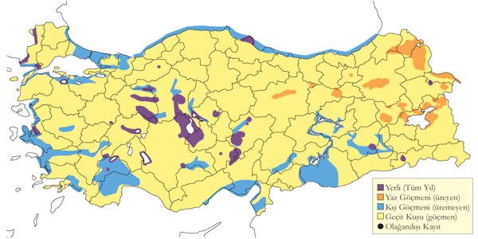
Üreme
Yuvalama alanı: Çoğunlukla sulak çayırlarla, sazlıkların, göllerin ve nehirlerin kıyısında ürer.
Yuvası: Yerdeki sığ bir çukurda yaptığı yuvasını bitkisel malzemeyle kaplar.
Yumurta sayısı: Türkiye’de gözlenen yumurta sayısı 3 (1 yuvada) ve 4 (3 yuvada) olarak kaydedilmiştir.
Üreme dönemi: Kıyı bölgelerinde nisan sonunda, yüksek alanlarda haziran ayında yumurta koyar, yavrular mayıstan itibaren gözlenir. MAR: 13 Nisan 1967’de Manyas Gölü’nde alanların kurulduğu gözlenmiştir. KAR: 1992’de Kızılırmak Deltası’nda çoğu çift, görünüşe göre 20 Nisan ile 10 Mayıs arasında yumurtlamış ve ilk yavru 11 Mayıs’ta gözlenmiştir [@hustings1994]. İÇA: 11 Nisan 1992’de Çöl Gölü’nde gözlenen iki kuluçkanın yavruları, bölgedeki en erken kayıttır ve yumurtlamanın mart ortasında başladığını göstermektedir. 14 Nisan-9 Haziran arasında bulunan yumurtalı yedi yuva ve mayıs-temmuz arasında kaydedilen 12 kuluçka diğer üreme kayıtlarıdır.
DOA: 6 ve 28 Haziran’da yumurtalı iki yuva bulunmuş; 30 Mayıs 1969, 30 Mayıs 1986 ve 28 Haziran’da yavrular gözlenmiştir. 9 Mayıs 1986’da Patnos’ta gözlenen iki yavru, yumurtlamanın 10 Nisan civarında başladığını göstermektedir. Zarar gören kuluçkaların telafisi nedeniyle üreme sezonunun uzadığı değerlendirilmektedir.
Alttürler ve Sınıflandırma
Monotipik bir türdür.
Mahmuzlu Kızkuşu
Vanellus spinosus, Spur-winged Lapwing
Nispeten yaygın olarak bulunan yaz konuğudur.
Açık sazlıkları, göl çevrelerini, nehir kıyılarını ve deltaları tercih eder. En önemli üreme alanları Akdeniz, Ege ve İç Anadolu’dadır. Gediz Deltası, Marmara Gölü, Ereğli Sazlıkları, Marmara’da Uluabat Gölü, Manyas Gölü ve Trakya’daki tek üreme alanı olan Meriç Deltası dikkate değerdir. Akdeniz’de Göksu Deltası en önemli üreme alanıdır ve Burdur Gölü’nde düzenli olarak kaydedilir. 1987’de Çukurova Deltası’nda yaklaşık 80-100 çiftin ürediği tespit edilmiştir [@have_etal1988]. Van Gölü Havzası’nda ise 1990’ların sonunda kolonize olduğu düşünülmektedir. İç Anadolu’da habitat kaybı nedeniyle son yıllarda belirgin bir azalma yaşamış ve artık sadece Sultansazlığı ile Seyfe Gölü gibi birkaç alanı kullanmaktadır.
Göç sırasında ülke genelinde daha bol ve yaygındır. Akdeniz’de en erken geliş 15 Mart’ta kaydedilmiş olup, nisan ortasına kadar üreme alanlarına yerleşmiş olur. Güneyde bile geçiş mayıs sonuna kadar devam eder ve bu dönemde Güneydoğu Anadolu’da, özellikle Birecik’te sıkça gözlenir. Ege ve Akdeniz’deki sulakalanlarda temmuz sonundan itibaren üreme sonrası sürüleri oluşur. Örneğin, Salihli’de 64, Burdur Gölü’nde 55, Acıgöl’de 36 ve 27 Ağustos 1988’de Göksu Deltası’nda 200 bireylik sürüler kaydedilmiştir. 13 Kasım 2010’da üç ve 18 Aralık 2010’da iki birey Birecik Barajı’nda kışlamıştır.
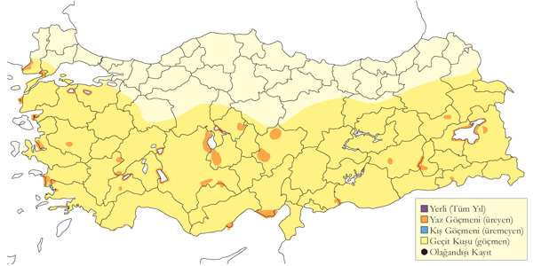
Üreme
Yuvalama alanı: Su yakınlarındaki açık alanlarda, çamur düzlüklerinde, çıplak arazide ya da seyrek vejetasyonun bulunduğu çayırlık alanlarda ürer. Özellikle göllerin ve sazlıkların çevresinde kuruyan arazilerde yuva yapar. Tek başına üremekle birlikte, birkaç çiftin gevşek bir bağ kurarak bir arada ürediği de gözlenmiştir. Bazı alanlar birçok çifti barındırır.
Yuvası: Açık arazide, sığ bir oyuğa yaptığı yuvasını bitkisel malzemeyle kaplar.
Yumurta sayısı: Türkiye’de gözlenen yumurta sayısı genellikle 4 (27 yuvada), ara sıra 3 (7 yuvada) ya da 2 (1 yuvada) olarak kaydedilmiştir. İki veya daha az yumurtalı kayıtlar, tamamlanmamış kuluçka olarak değerlendirilmiştir. Bir yuvada görülen beş yumurtayı muhtemelen aynı dişi yumurtlamıştır.
Üreme dönemi: Nisan başı ile haziran başında yumurta koyar, yavrular haziran başından itibaren görülür. MAR: 31 Mayıs 1967’de Manyas Gölü’nde iki yumurtalı bir yuva bulunmuş ve 11 Nisan 1967’de Uluabat Gölü’nde alanların kurulduğu gözlenmiştir. 17-24 Mayıs 1998’de aynı yerde üç çiftin kur davranışı sergilediği kaydedilmiş ancak üreme muhtemelen başarısız olmuştur [@welch1998b]. EGE: En erken kayıt, 30 Nisan 1975’te Bafa Gölü’nde bulunan iki yumurtalı tamamlanmamış bir kuluçkadır. Mayıs ayının ikinci yarısında yumurtalı beş yuva kaydedilmiş ve 26 Haziran 1999’da Akköy yakınlarında bulunan beş yumurtalı yuva en geç kayıttır. AKD: 3-7 Mayıs 1990’da Silifke ve Karataş yakınlarında dördü tamamlanmış durumda olan yumurtalı sekiz yuva bulunmuştur. Mayıs ayında birçok ve 17 Haziran 1992’de bir yumurta kaydı vardır. Haziran ayında çoğunlukla küçük yavru kaydedilmiş ve 9 Nisan civarında başlayan yumurtlamayı gösterecek şekilde 5 Mayıs’ta bir kayıt bulunmuştur. İÇA: En erken tamamlanmış kuluçka kaydı 7 Mayıs 1970’te elde edilmiştir. Mayıs ayında birkaç başka kayıt bulunmakla birlikte, 19 Haziran 1975’te geç bir kayıt olarak Seyfe Gölü’nde hala kuluçkada olan bir erişkin gözlenmiştir [@husband1984]. 5 Haziran 1992’de Eşmekaya’da küçük yavrular kaydedilmiştir.
Alttürler ve Sınıflandırma
Monotipik bir türdür. Geçmişte Hoplopterus cinsi altında değerlendirilmiştir.
Gri Başlı Kızkuşu
Vanellus cinereus, Grey-headed Lapwing
Rastlantısal konuktur.
1 birey Kızılırmak Deltası’nda 5 Mart 2018 tarihinde kaydedilmiştir.
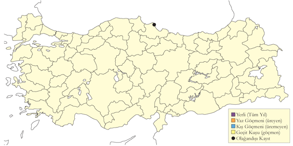
Üreme
Türkiye’de yuvalamaz. Üreme alanı Kuzedoğu Çin’dedir. Kışı Güneydoğu Asya’da geçirir.
Alttürler ve Sınıflandırma
Monotipik bir türdür.
Büyük Kızkuşu
Vanellus indicus, Red-wattled Lapwing
Lokal olarak artan sayılarda görülen yerlidir.
İlk kez Haziran 1983’te kaydedilmiş olup [@murphy1984; @martins1988], o dönemde Türkiye’deki üreyen popülasyonun sadece 10 çift olduğu tahmin edilmiştir [@kasparek1992a]. Daha sonra kuzeyde Siirt’e, batıda Nusaybin ve Ceylanpınar’a, güneydoğuda ise Silopi’ye kadar birkaç farklı lokalitede de görülmüştür [@balmer2002b]. Cizre’den itibaren Dicle Nehri boyunca gölcüklere bağlı çakıl yataklarında son derece lokal olarak üreyen yerli ya da yaz konuğu bir türdür. Günümüzde yayılış alanını genişleterek Urfa’da Birecik ve Karkamış’a kadar ulaşmıştır.
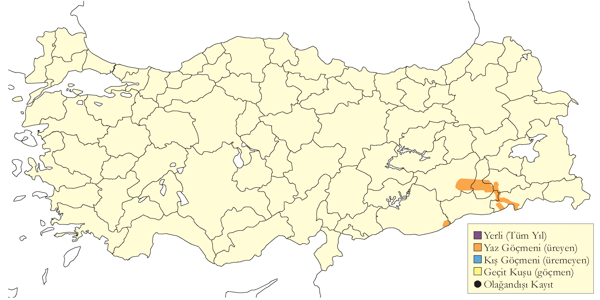
Üreme
Yuvalama alanı: Türkiye’de yuvası betimlenmemiştir. Yeri bir miktar kazarak yaptığı yuvasını hiç kaplamaz ya da bitki sapları ve yakındaki artıklarla seyrek biçimde kaplar.
Yuvası: Türkiye’deki yuvaların betimlemesi bulunmamaktadır.
Yumurta sayısı: Türkiye’deki yumurta sayısı bilinmemektedir. Ancak, başka bölgelerde olağan kuluçka büyüklüğü dört yumurtadır.
Üreme dönemi: Türkiye’deki ilk kayıt, 15 Haziran 1983’te ajite davranış sergileyen erişkinlere aittir. Ardından, 31 Mayıs 1984’te iki yavru, 18 Mayıs 1985’te üç yavrulu bir çift, 6 Mayıs 1986’da kuluçkada bir erişkin ve 7 Haziran 1987’de üç yavru kaydedilmiştir.
Alttürler ve Sınıflandırma
Ülkede aigneri alttürü bulunmaktadır, ancak bu tür içerisindeki varyasyon klinal bir yapı göstermektedir [@delhoyo1996]. Geçmişte Hoplopterus cinsi altında sınıflandırılmıştır.
Sürmeli Kızkuşu
Vanellus gregarius, Sociable Lapwing
Lokal olarak nispeten çok sayıda görülen geçit türüdür.
Yakın tarihe kadar az sayıda rastlanan bir geçit türü olarak kabul edilmiştir [@kasparek1992b]. Kasparek, geçmiş 21 kaydı derlemiş ve analiz etmiştir. Tür, çoğunlukla nisan sonu ile eylül ortasından ekim sonuna kadar görülmektedir. En erken 7 Mart’ta ve en geç 17 Kasım’da kaydedilmiştir. Genellikle beş bireye kadar gruplar halinde gözlenir. En yüksek sayılar Ekim 2002, 2003 ve 2006’da Doğu Anadolu’da kaydedilen 115, 125 ve 189 bireylik sürülerdir [@demirci2003; @murdoch2006; @balmer2008]. Ayrıca, Mart 1969 sonlarında Ceylanpınar ve Harran ovalarında 30 bireylik bir sürü ile birkaç başka grup kaydedilmiştir [@ost1972]. Ayrıca 27 Eylül 1986’da Tatvan yakınlarında Nemrut Dağı üzerinden geçen toplam 38 bireylik iki sürü, gözlemciler tarafından Ak Kuyruklu Kızkuşu olarak kaydedilmiş olsa da [@martins1989], bu sürülerin neredeyse kesin olarak bu türe ait olduğu düşünülmektedir [@kasparek1992b]. Kasparek, Negev Çölü’nde (İsrail) kışlayan birey sayıları göz önüne alındığında, Türkiye’den geçiş yapan türün sayılarını mevcut kayıtlardan çok daha yüksek olabileceğini öne sürmüştür. Türün tercih ettiği kuru kumluk ovalar, ekili alanlar ve nadasa bırakılmış araziler özellikle Doğu Anadolu’da yaygındır.
2007 ve sonrasında türün Türkiye’den geçen birey sayılarının daha yüksek olduğu ortaya çıkmıştır. Kazakistan’daki üreme alanlarında bireylere takılan radyo vericisi sayesinde Mart 2007’de Ceylanpınar’da 1017 birey ve Ekim 2007’nin sonlarında aynı bölgede 3200 birey sayılmıştır [@balmer2008]. Diğer dikkat çekici gözlemler arasında, 12 Ekim 2008’de Bulanık’ta 105 birey, 7 Mart 2009’da Şanlıurfa’da 34 birey (Sandgrouse 31: 220), 11 Mart 2010’da Şanlıurfa’da 55 birey (Sandgrouse 32: 186), 26 Eylül 2010’da Erzurum Ovası’nda 60 birey, 28 Eylül 2010’da Ceylanpınar’da 783 birey ve 10 Ekim 2010’da Bulanık ile Malazgirt arasında 554 birey kaydedilmiştir. Ekim 2007’den itibaren yapılan bu önemli gözlemler detaylı olarak [@biricik2009] ve [@biricik2008] tarafından derlenmiştir.
Diğer bölgelerde nadir olarak görülse de Marmara Bölgesi’nde yalnızca bir kez kaydedilmiştir [@ertan1996].
Türün eskiden Ukrayna’da üremiş olması, 19. yüzyılda Türkiye’de daha sık kaydedilmesini açıklayabilir. Türkiye’deki ilk kayıtlarında, sürüler eylül ortasından ekim ortasına kadar tekrar tekrar Erzurum civarında gözlenmiş [@dickson1839] ve bu bölgedeki varlığı daha sonra [@curzon1854] tarafından da doğrulanmıştır. Ancak türün yayılışı boyunca uzun vadeli genel bir azalmanın yaşandığı iyi bir şekilde belgelenmiştir [@birdlife2000; @eichhorn2002; @tomkovich2002].
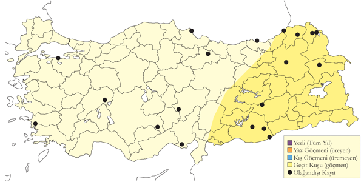
Üreme
Türkiye’de yuvalamaz. Orta Asya’da yuvalar, kışı Sudan, Pakistan ve Hindistan’da geçirir.
Alttürler ve Sınıflandırma
Monotipik bir türdür. Geçmişte Chettusia cinsi altında değerlendirilmiştir.
Ak Kuyruklu Kızkuşu
Vanellus leucurus, White-tailed Lapwing
Düzensiz olarak az sayıda görülen yaz göçmenidir.
Türkiye’ye doğudaki ve güneydeki çekirdek üreme bölgesinden nadiren ve düzensiz olarak gelen bir göçmendir.
Konya Havzası’nın güney kesimlerinde ya da güney kıyılarındaki deltalardaki eski kayıtların tümünü değerlendirmiş (Kasparek, 1992) Geçtiğimiz 30 yıl boyunca, nisan ile ağustos arasında çok nadir ve yarı koloni halinde üreyen bir tür olarak, yedi lokalitede kaydedilmiştir. Göksu Deltası’nda en fazla 15 birey görülmüş ve son kayıt 1997’ye aittir. Çukurova Deltası’nda eski Yarma sulakalanlarında sıradışı olarak dokuz çiftten fazla kaydedilmemiş, genellikle beş çiftin altında kalmıştır. Karatepe’de 2000 yılında en az iki çift, Hotamış’ta 1985’te en fazla 13 birey ve son olarak 1986’da kaydedilmiştir. Sultansazlığı’nda en yeni kayıt 1996 yılına aittir. Ayrıca, Ereğli Sazlığı’nda üremeyi düşündürecek gözlemler yapılmıştır. Ek olarak, üreme döneminde Kızılırmak Deltası, Amik Gölü, Van Gölü, Iğdır Ovası, kur davranışının gözlendiği Birecik ve Aras Vadisi’nin Aralık bölgesinde altı lokalitede kaydedilmiştir. Bu bölgelerden en azından bazılarının zaman zaman daha geniş bir üreme yayılışına işaret ettiği düşünülmektedir. Son üreme 1997’de ve 2000’de kaydedilmiştir (Brugière, 2002; Kirwan et al., 2003).
Güncel kayıtları şu şekildedir: 8 Ocak-4 Şubat 2015 arasında Şanlıurfa Akçakale’de, 1 Nisan 2011’de Diyarbakır’da, 1 Mayıs 2008’de Kars Kuyucuk Gölü’nde, 28 Nisan’da Erzurum’da, 22 Nisan’da Gaziantep’te ve 21 Mayıs 2006’da Mogan Gölü’nde kaydedilmiştir. İğneada ve Manyas Gölü’ndeki nisan sonu ve ekim kayıtları ile Büyük Menderes Deltası’ndaki nisan kayıtlarının tamamı neredeyse kesinlikle göçmen bireylere aittir. Tür 2 Nisan’dan itibaren kaydedilmekle birlikte çoğunlukla mayıs ayında gözlenir. En geç 20 Ekim’de kaydedilmiştir.
Üreme kayıtlarının düzensizliği kesinlikle gözlemci eksikliğinden kaynaklanmamaktadır. Örneğin, 1988-91 yılları arasında Göksu Deltası sistematik ve kapsamlı bir şekilde araştırılmış ancak birçok yıl bu alanda kesinlikle bulunmamıştır. Aynı şekilde, en iyi bilinen üreme alanlarından biri olan Hotamış Sazlığı’nda 1991 yılı nisan sonu ve mayıs ortasında tür kaydedilmemiştir [@kirwan1993a]. Son 25 yılda gözlemci aktivitelerindeki radikal artışa rağmen türün ülkedeki kayıtlarında herhangi bir artış olmamıştır.
Özellikle Konya Havzası’nda türün tercih ettiği sığ, bozkır (playa) sulakalanlarının kurutulması ve tahrip edilmesi, türün görülmesindeki ve üreme desenindeki çarpıcı değişimlere katkıda bulunmuş olabilir. Yarma ve Hotamış gibi alanlar bugün tamamen yok olmuştur.
Türün kış iklimine bağlı olarak uzun dönemli kolonizasyonunun sınırlanmış olabileceği değerlendirilmektedir. Genellikle düşük enlemlerde üreyen ve kışlama alanlarında düzensiz şekilde az sayıda görülen bu türün, çevresel koşulların geçici olarak uygun olduğu alanlarda fırsatçı biçimde üremesi, türün ekolojisi açısından önemli bir adaptasyon olarak görülebilir. Son yıllarda görülen batıya doğru yayılma eğilimi değerlendirilirken bu gibi faktörler göz önünde bulundurulmalıdır [@dean1977]. Örneğin, Romanya kıyılarında birbirini takip eden sezonlarda üremesi [@kiss2000] ve Bulgaristan’daki ilk kayıtlar [@nankinov2003], bu yorumu desteklemektedir. Ancak bu eğilim Türkiye’de devam etmemiştir.
Türkiye’deki ilk kayıt, Dalman koleksiyonundaki (Kudüs) bir çifte dayanmaktadır. Aharoni tarafından 17 Haziran 1910’da Amik Gölü’nde vurulmuş olan bu bireyler, türün varlığına dair ilk kanıttır [@kumerloeve1966d; @kumerloeve1969d].
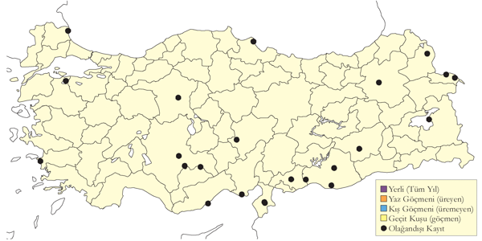
Üreme
Yuvalama alanı: Tatlı ya da tuzlu suların yanındaki açık sazlık alanlarda ve İç Anadolu’da göllerin yakınındaki nemli ve kısmen su basan bozkırlarda yuva yapar.
Yuvası: Açık alanlarda, sığ bir deliğe yaptığı yuvasını bitkisel malzemeyle kaplar.
Yumurta sayısı: Türkiye’de gözlenen yumurta sayısı genellikle 3 (2, ancak tamamlanmış kuluçka olup olmadığı kesin değildir) ve 4 (1 yuvada) olarak kaydedilmiştir. Diğer yerlerde olağan kuluçka büyüklüğü dört yumurtadır.
Üreme dönemi: Nisan sonundan itibaren üreme başlar. AKD: Lehman, Göksu Deltası’nda 27 Mayıs 1971’de üç yumurtalı bir yuva ile 29 Mayıs 1971’de başka bir yuva bulmuş ve 27 Temmuz 1971’de yeni tüylenmiş bir yavru gözlemiştir [@kasparek1992b]. 1997’de 12 Mayıs’tan 11 Haziran’a kadar kur ve territoryum davranışı yapan altı birey kaydedilmiştir. Çukurova’da, 1 Haziran 1971’de Berdan Nehri’nin taşkın alanlarında ürediği düşünülen bir çift ve üç yalnız birey gözlenmiştir [@kasparek1992b]. İÇA: Warncke, 3 Haziran 1971’de Yarma yakınlarında biri çiftleşen üç çift gözlemiş; 9 Haziran 1971’de 5-6 çift ve iki ile dört yumurtalı iki yuva bulmuştur. 11 Haziran 1971’de en az dokuz çift kaydetmiş ve yuvalardan birine üçüncü yumurta bırakıldığı gözlenmiştir. 23 Temmuz 1971’de alan kurumuş ve erişkinler dağılmıştır [@kasparek1992b]. 26-27 Ağustos 1974’te Hotamış’ta üç erişkin, 3-4 Haziran 1975’te bir çift ve yalnız bir birey gözlenmiştir. Ayrıca, üremeyi düşündüren huzursuz bir birey gözlenmiştir. Daha sonraki erişkin kayıtları şöyledir: 10 Mayıs 1977’de 1, 21 Mayıs 1984’te 1, 14 Haziran 1985’te 13, 24-25 Haziran 1985’te iki ve 6 Temmuz 1985’te alarm ötüşü yapan üç erişkin kaydedilmiş; bu bireylerin ürediği varsayılmıştır [@kasparek1992b]. 9 Temmuz 1996’da Sultansazlığı’nda muhtemelen üreyen iki erişkin kaydedilmiştir. Tuz Gölü’nün batısında Karatepe’de, 19 Mayıs 2000’de Carex’lerin bulunduğu bir alandaki yuvalarında ikisi düzensiz biçimde oturan altı erişkin gözlenmiştir. Ertesi sabah ikisi sürekli kuluçkada olan en az dokuz erişkin gözlenmiş ancak yuvalar incelenmemiştir [@brugiere2002]. GDA: 18 Mayıs 1992’de Birecik’te kur davranışı gözlenmiştir.
Alttürler ve Sınıflandırma
Monotipik bir türdür. Geçmişte Chettusia cinsi altında değerlendirilmiştir.
Doğu Cılıbıtı
Anarhynchus asiaticus, Caspian Plover
Rastlantısal konuktur.
İlkbaharda mart, nisan ve haziran, sonbaharda ise ağustos ile ekim arasında son derece nadir bir geçit türüdür. Bilinen kayıtlar şunlardır: 19 Mart 1965’te Amik Gölü’nde bir dişi ve bir erkek kaydedilmiştir [@kumerloeve1966d]. 25-26 Ekim 1966’da Mogan Gölü’nde bir birey [@ost1969], 12 Ağustos 1967’de Sodalı Gölü’nde 14 birey [@vielliard1968resultats], 14 Nisan 1971’de Alanya’nın doğusunda bir birey [@warncke1972beitrag; @ost1975], 5 Eylül 1971’de Erçek Gölü’nde bir birey [@ost1975], 23 Ağustos 1988’de Tuzla (Palas) Gölü kıyısındaki kuru tarlalarda 15 birey [@kirwanmartins1994] ve 3 Ağustos 1991’de Bulanık’ta iki birey fotoğraflanmıştır (Birding World 5: 252). 29 Temmuz 1998’de Kulu Gölü’nde bir birey [@kirwanmartins1994], 8 Haziran 1999’da Tuzla Gölü’nde (Çukurova, Akdeniz) bir birey fotoğraflanmış (Sandgrouse 22: 76), 17 Ekim 1999’da Kızılırmak Deltası’nda bir birey gözlenmiştir [@kirwan2003]. Daha yakın tarihlerde 8 Nisan 2010’da Çukurova, Kaldırım Tuzlası’nda (Sandgrouse 32: 186), 28 Nisan 2011 ve 11 Nisan 2014’te Göksu Deltası’nda kaydedilmiştir.
Diğer güncel kayıtlar şunlardır: 20 Nisan 2011’de Doğubayazıt Sazlıkları’nda (Ağrı) bir birey, 29 Mart 2015’te Antalya’da bir birey, 18 Nisan 2015’te Manavgat Nehir Ağzı’nda bir birey (G. Coşkun, O. Eldelekli), 2 Nisan 2021’de Manavgat Nehir Ağzı’nda bir birey (O. Gül), 10 Nisan 2023’te Milleyha ve sahil şeridinde (Hatay) bir birey ve 11 Nisan 2023’te Milleyha’da bir birey (A. Atahan, M. Atahan) gözlenmiştir.
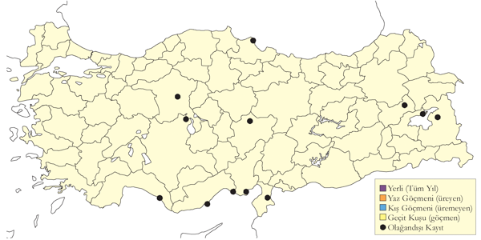
Üreme
Türkiye’de yuvalamaz. Yuvalama alanı Orta Asya’dır. Kışı Doğu ve Güney Afrika’da geçirir.
Alttürler ve Sınıflandırma
Monotipik bir türdür. Geçmişte Charadrius türü altında sınıflandırılmıştır.
Tibet Cılıbıtı
Anarhynchus atrifrons, Tibetan Sand-Plover
Rastlantısal konuktur.
Kesin olarak kabul edilen ilk kayıt, 20-21 Nisan 2012 tarihlerinde Adana Tuzla Gölü’nde görülen ikinci takvim yılındaki bir bireydir. Bu gözlemle ilgili tüm ayrıntılar Nadir Tür Komitesi’ne sunulmuştur. Ardından, 6-16 Mart 2021 tarihleri arasında Milleyha ve sahil şeridinde (Hatay) bir birey (A. Atahan, M. Atahan), 2-3 Mayıs 2022 tarihleri arasında yine Milleyha ve sahil şeridinde (Hatay) bir birey (E. Yoğurtçuoğlu) ve 17-21 Ekim 2024 tarihleri arasında Kumkale Deltası’nda (Çanakkale) bir birey (N. Yavuz, M. Ülker) gözlenmiştir.
Türkiye ve Kıbrıs için iddia edilen önceki kayıtlar ayrıntılı bir şekilde incelenmiş ve tamamı reddedilmiştir [@flint1997]. Bölgede bulunan büyük cılıbıtın columbinus alttürü, ince gaga yapısı ile birçok gözlemcinin yanlış tayin yapmasına neden olabilmektedir. 21 Nisan 1980’de Göksu Deltası’nda görülen kuş [@bezzel1986], sonradan büyük cılıbıt olarak kabul edilmiştir.
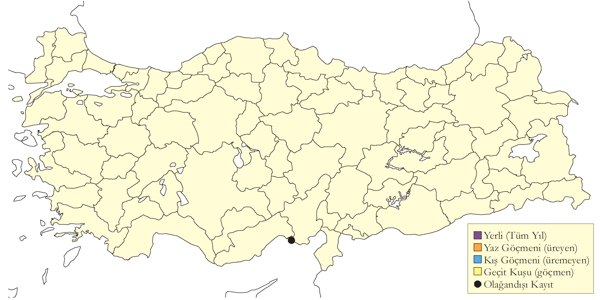
Üreme
Türkiye’de yuvalamaz.
Alttürler ve Sınıflandırma
Türkiye’de görülen kuşun alttür sınıflandırılması yapılamamıştır. Geçmişte Charadrius türü altında sınıflandırılmıştır.
Büyük Cılıbıt
Anarhynchus leschenaultii, Greater Sand-Plover
Lokal olarak az sayıda bulunan yaz konuğu ve yaygın olarak bulunan geçit türüdür.
2000’li yıllara kadar İç Anadolu’nun sulakalanların çevresindeki tuzcul bozkırlarda yuvaladığı düşünülmüştür. Ancak son yıllarda Konya Bozdağ’daki dağlık bozkırda ve Sivas çevresindeki potansiyel üreme alanlarında görülmesi, üreme habitatının farklı olabileceğini göstermiştir [@ozen2001]. En çok kaydı olan üreme alanları İç Anadolu’nun bozkırlarıdır. En önemli üreme alanları Karapınar, Zengen, Cihanbeyli düzlükleri ve Sultansazlığı’dır. Karapınar Ovası’nda Haziran 1971 başlarında 50 çift kaydedilmiştir [@lehmann1969]. Birecik’in de olası üreme alanlarından biri olduğu düşünülmektedir. Gâvur Gölü ile Van ve Erçek Gölleri çevresinde gözlenen bireylerin Azerbaycan ve Ermenistan’daki üreme alanlarına göç eden kuşlar olabileceği tahmin edilmiştir. Genellikle küçük gruplar halinde kaydedilmekle birlikte, zaman zaman 120 bireylik sürüler de görülmüştür.
Tarımsal faaliyetlere bağlı habitat kaybı nedeniyle son 30 yılda üreyen nüfusu belirgin şekilde azalmış, Mogan ve Temelli Gölü gibi eski üreme alanlarını terk etmek zorunda kalmıştır.
Ülke genelinde oldukça lokal bir geçit türüdür. İlkbaharda güney kıyılarındaki deltalarda şubat sonundan mayıs ortasına kadar düzenli olarak gözlenir. Yaz ortasında, üremeyen bireyler kıyısal sulakalanlarda rastlanabilir. Örneğin, 26 Haziran 1966’da Bafa Gölü’nde yapılan bir gözlem ve Büyük Menderes Deltası’ndaki en az beş yaz kaydı bu durumu desteklemektedir. Acıgöl’de de türün gözlendiği kaydedilmiştir. Sonbaharda ise kasım sonuna kadar aynı bölgelerde kalır. Karadeniz kıyılarındaki ilkbahar ve sonbahar kayıtları büyük olasılıkla göç sırasında menzil ötesine ulaşan bireylere aittir. 5 Şubat 2006’da Gediz Deltası’nda kaydedilen bir birey, türün nadiren de olsa kışlayabileceğini düşündürmektedir.
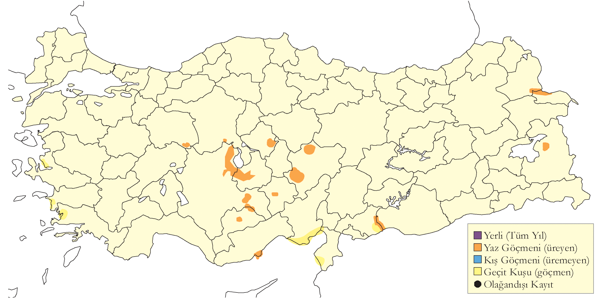
Üreme
Yuvalama alanı: Sudan uzakta geniş açıklık alanlar, çamur düzlükleri, bozkırlar ve sığ su çöküntülerinin bulunduğu ve kuruduğunda tuz tabakası oluşan çamurluklar. Aynı zamanda kısa, seyrek bitkilerin bulunduğu daha kuru çamurluk alanlarda ürer.
Yuvası: Yerde, açıkta ya da bir vejetasyon kümesinin yanında bir miktar kazarak yaptığı yuvasını çeşitli bitkisel artıkla (Lehmann, 1969) ya da küçük taşlarla ve birkaç bitki sapıyla kaplar (OST, 1975).
Yumurta sayısı: Türkiye’de gözlenen yumurta sayısı 3 (36 yuvada), 2 (2 yuvada). Tamamlanmamış kuluçkalar nedeniyle iki yumurtalı yuvalar da kaydedilmiştir. Yavru sayısı: 1 (3 yuvada), 2 (3 yuvada), 3 (5 yuvada).
Üreme dönemi: Mart sonu ve nisan başı arasında yumurtlar, yavrular nisan sonunda çıkar. İÇA. Haziran 1971’de Karapınar Ovası’nda yumurtalı yedi yuva bulmuş (Lehmann, 1969)., 8 Mayıs 1968’de yavrulu üç kuluçka ve 3 Mayıs 1969’da birçok kuluçka kaydetmiştir; gözlenen yavruların büyüklüğünden ve toplanan yumurtaların kuluçka sürelerinden yumurtlamanın mart sonunda başladığını, ana yumurtlama döneminin de 1-20 Nisan olduğunu, ilk yavrunun yumurtadan çıkışının 20 Nisan civarında olduğunu hesaplamış ve mayıstaki kuluçkaları ikinci deneme olarak değerlendirmiştir. (McNeile, 1950, 1951, 1954, 1967, 1968, 1970, 1972, 1973), hepsi 14-27 Nisan tarihleri arasında olmak üzere 1970, 1972 ve 1973 yıllarındaki üç ziyaretinde, kuluçka döneminin değişik aşamalarında olan yumurtalı 12 yuva bulmuştur. Bunlara, 16-17 Nisan 1970’de çatlamaya yakın iki ve üç yumurtalı kuluçkalar da dahildir. J. Whitaker, 26-27 Nisan 1988’de yumurtalı iki yuva, 5 Mayıs 1989’da bir yumurtalı bir yuva (8 Mayıs’ta bu yuvada 3 yumurta görülmüştür) ve 10 Mayıs 1990’da yumurtalı bir yuva bulmuştur . 20 Nisan 2004’te yeni yumurtadan çıkmış üç yavrulu bir yuva, 21 Nisan 2004’te iki yumurtalı (tamamlanmamış kuluçka) bir yuva bulunmuş ve aynı tarihte yumurtlamanın martın üçüncü haftasında başladığını gösterecek şekilde yaklaşık 5 günlük yavrular gözlenmiştir. 12-15 Mayıs 2004’te her biri üç yumurtalı üç yuva; 8 Mayıs 2006’da her biri üç yumurtalı üç yuva bulunmuş; 9 Mayıs 2005’te her biri üç yumurtalı dört yuva bulunmuş, iki yumurtalı başka bir yuvada yumurtlama henüz tamamlanmamıştır. İç Anadolu’da başka yerlerde, 4 Nisan 1981’de Bor yakınlarında kur uçuşu yapan dört kuş gözlenmiştir (Parr, 1981). Bezirhane’de, 17 Haziran 1987’de üç yumurtalı bir yuva bulunmuştur ki bu en geç yumurtalı yuva kaydıdır, aynı gün üç genç gözlenmiştir. 17 Temmuz 1986’da aynı yerde, en az 13 genç kaydedilmiştir. Tuz Gölü çevresinde, 28 Mayıs 1967, 16 Mayıs 1969 (Lehmann, 1969) ve 20 Mayıs 1970’de yumurtalı yuvalar bulunmuş ve 21 Mayıs 1969’da bir kuluçkanın yavruları gözlenmiştir; Bolluk Gölü’nde, 26 Mayıs 1993’te üç yumurtalı bir yuva bulunmuş, 8 Mayıs 1993’te yaklaşık 2 haftalık bir yavru ve 26 Mayıs 1993’te tüylenmiş büyük bir yavru gözlenmiştir. Çöl Gölü’nde, 23 Nisan 1988’de, üç yumurtalı bir yuva bulunmuş ve 17 Temmuz 1986’da çoğu genç olan 16 kuş gözlenmiştir (Karauz Kiraç, 1993). 5 Nisan 1971’de Hortu yakınlarında bulunan üç yumurtalı yuva Türkiye’deki en erken yumurtalı yuva kaydıdır. Sultansazlığı’nda, 21 Mayıs 1989’da üç yavrulu iki kuluçka, 26 Mayıs 1982’de iki yavrulu bir kuluçka (Kasparek, 1985), Haziranda yavrulu üç kuluçka; kuluçkaların ikisi 11 Mayıs 1967’de ve biri 6 Mayıs 1968’de Ayrancı’da gözlenmiştir (Lehmann, 1969). 14/20 Mayıs 1970’de Konya’nın kuzeyinde küçük ve 14 günlük iki yavruda oluşan aile grubu ve 1 Haziran 1975’te İncesu yakınlarında iki yavrulu bir aile grubu kaydedilmiştir. 13 Haziran 1975’te Ereğli Sazlığı’nda ve 5 Temmuz 1979’da Hotamış’ta tüylenmiş yavrular gözlenmiştir. AKD. 20 Haziran 1989’da Göksu Deltası’nda küçük yavrulu iki çift kaydedilmiştir. GDA. 5-7 Haziran 1973’te Birecik’in kuzeyinde gözlenen iki erişkin ve yeni tüylenmiş genç bir birey muhtemelen lokal üremeyi göstermektedir. DOA. 7 Haziran 1994’te Iğdır ve Tuzluca arasındaki yüksek, düzlük ve çakıllı bozkırda bir dişinin yuvalıyor gibi davrandığı gözlenmiştir (Kirwan, 1994). Erçek Gölü’nde ürediği bildirilmiştir (Magnin & Yarar, 1997). Geç kayıtların ikinci kuluçka mı yoksa daha önceki başarısız deneme üzerine ikinci bir üreme çabası mı olduğu belli değildir.
Alttürler ve Sınıflandırma
Türkiye’de columbinus alttürü görülür. Bu alttür genellikle daha küçük, kısa bacaklı ve küçük ve ince gagalıdır ve sıklıkla Tibet Cılıbıtı ile karıştırılır (Hirschfeld, Roselaar & Shirihai, 2000). Geçmişte Charadrius türü altında sınıflandırılmıştır.
Akça Cılıbıt
Anarhynchus alexandrinus, Kentish Plover
Nispeten yaygın olarak ve yer yer çok sayıda bulunan yerli ve yarı göçmendir.
İç Anadolu, Ege ve Akdeniz bölgelerinde daha çok sayıda bulunur. En önemli üreme alanları Yumurtalık Lagünleri, Gediz Deltası, Acıgöl ve Tuz Gölü’dür. Daha az sayılarda ürediği Kızılırmak Deltası, Van Gölü havzası ve Marmara Bölgesi’nde ise daha lokal olarak kaydedilir. Çukurova’da 1987’de üreyen çift sayısının 2.000’den fazla olduğu tahmin edilmiştir [@have1988].Yumurtalık Lagünlerindeki popülasyonun 1.190 çifte kadar ulaştığı tahmin edilmişse de [@szekely1998], son yıllarda bu rakamların daha düşük olduğu düşünülmektedir. Benzer şekilde, 1995-96 yıllarında Gediz Deltası’ndaki üreyen popülasyonun 900-1000 çift arasında olduğu tahmin edilmiştir [@eken1997a], ancak son sayımlarda bu sayı 80 çift olarak tespit edilmiştir (Onmuş).
Göç dönemlerinde ülke genelinde daha yaygın olarak ve yüksek sayılarda görülür. Ege ve Akdeniz’deki kışlayan popülasyonlar nedeniyle ilkbahar göçünün başlangıcını belirlemek zordur. Diğer bölgelerinde ilk kayıtlar martın ikinci haftasında başlar. Göçün en yoğun dönemi güney kıyılarında mart sonunda, diğer bölgelerde ise nisanın ilk yarısında gerçekleşir. Haziran başına kadar süren ilkbahar göçlerinde en yoğun geçişler bu dönemde gözlenir. Çukurova’da 1990 baharında, mart sonundan mayıs başına kadar akça cılıbıt popülasyonunun %70 oranında azaldığını görülmüştür [@kivit1994]. Bu çalışma kapsamında 27 Mart’ta sayılan toplam 4.745 birey, ülkemizde kayda geçen en büyük sayıyı temsil etmektedir. Sonbahar göçü temmuz ayında başlar, ancak çoğunluğu ağustos sonu ile eylül ortası arasında geçer ve kasım ayında da belirgin şekilde devam eder.
Ege ve Akdeniz bölgelerinde yüksek sayılarda kışlayan popülasyonlar bulunmaktadır. Gediz, Güllük ve Büyük Menderes Deltaları ile Çukurova Deltası, toplamda yaklaşık 2.000 bireylik kışlayan popülasyona ev sahipliği yapar. Akdeniz’deki kayıtların çoğunluğu Göksu ve Çukurova Deltalarından gelir ve
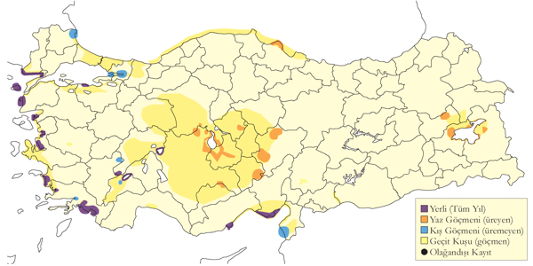
Üreme
Yuvalama alanı: İç göllerin (özellikle tuzlu ya da acı) kıyılarında, tuzlu bataklıklarda, çamur düzlüklerinde, kumsallarda, iri çakıllık alanlarda ve kıyı bölgelerdeki lagünlerin kıyılarında vejetasyonun az olduğu çamurluk ya da kumluk açık alanlarda yuva yapar. Kocaçay Deltası’nda bir yuvanın saz kümesinin içine gizlendiği gözlenmiştir.
Yuvası: Yerde sığ bir çukura yapılan yuva, az miktarda bitkisel malzeme ile kaplanır ya da hiç malzeme kullanılmaz.
Yumurta sayısı: Türkiye’de gözlenen yumurta sayısı 3 (29 yuvada) ve 2 (1 yuvada) olup, 1-2 yumurtalı yuvaların tamamlanmamış kuluçkalar olduğu düşünülmektedir. Dört yumurtalı yuva kaydı bulunmamaktadır.
Üreme dönemi: Mart sonunda ve nisan başında yumurta bırakır, yavrular nisan sonundan itibaren yumurtadan çıkar ve haziran ayında uçmaya başlar. MAR: 26 Haziran 1999’da Kocaçay Deltası’nda çok sayıda yavru gözlenmiştir. 4 Haziran 2006’da aynı bölgede 3 yumurtalı bir yuva bulunmuş, 26 Haziran 1973’te Gülpınar’da 3 yavrulu bir çift kaydedilmiştir. EGE: İzmir yakınlarında 6 Mayıs 1899’da gözlenen yeni çıkmış yavru, yumurtlamanın 10 Nisan civarında başladığını göstermektedir [@selous1900]. AKD: Çukurova Deltası, Tuzla Gölü’nde mayıs sonu/haziran 2000’de yapılan gözlemlerde yumurtalarını gündüz yuva malzemesi ile örten ve geceleri kaldıran akça cılıbıtların bu davranışının amacı kesin değildir ancak yumurtaları predatörlerden koruma ya da sıcaklığı düzenleme amacı taşıdığı düşünülmektedir [@szentirmai2004]. 1996-97’de Tuzla Gölü’nde hektar başına 2-6 yuva kaydedilmiş ancak üreme başarısı düşüktür; 1997’de 82 yuvadan sadece 11’indeki yavrular yumurtadan çıkabilmiştir [@szekely1998]. 19 Nisan 1973 ve 21 Nisan 1974’te gözlenen yeni çıkmış yavrular, yumurtlamanın 22-24 Mart’ta başladığını göstermektedir. Nisan-mayısta yumurtalı 24 yuva ve mayıs-haziranda 17 yavru kaydedilmiştir. KAR: Kızılırmak Deltası’nda 7 Mayıs 1992’de gözlenen yavru, yumurtlamanın 11 Nisan civarında başladığını göstermektedir [@hustings1994]. İÇA: Karapınar’da 10 Nisan 1970’teki kayıt en erken, Kulu Gölü’nde 19 Haziran 1992’deki kayıt en geç olmak üzere 17 yuva kaydı bulunmaktadır. 21 Nisan 1967’de gözlenen yavru, yumurtlamanın mart sonunda başladığını göstermektedir. DOA: 28 Mayıs 1969’da Van yakınlarında bulunan 3 yumurtalı bir yuva ve üç kuluçka kaydı, yumurtlamanın mayıs başında başladığını göstermektedir. Üreme sezonunun uzun olduğu ve yılda iki kez kuluçkaya yatmanın olası olduğu düşünülmektedir.
Alttürler ve Sınıflandırma
Türkiye’de nominat alttürü bulunur. Geçmişte Charadrius türü altında sınıflandırılmıştır.